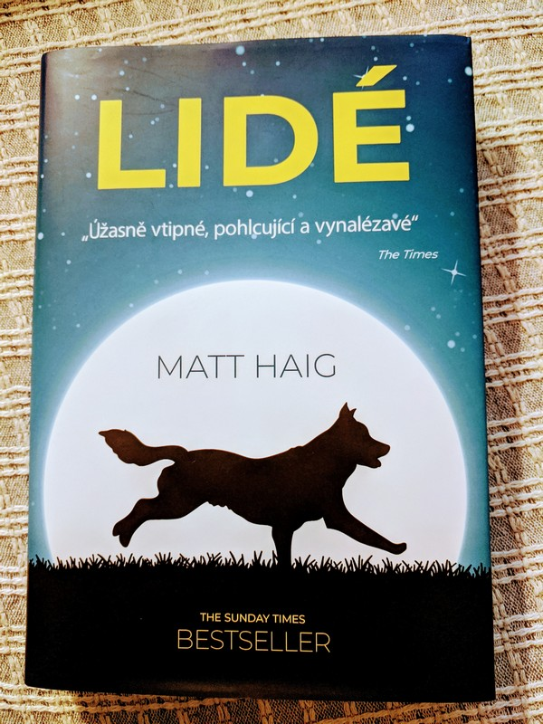

I dnes to bude výlet tak trochu mimo můj žánr, nicméně anotace této knihy byla natolik filosofická a zároveň nicneříkající, že mi zvědavost nedala a na nabídku recenzního výtisku od knihkupectví Megaknihy.cz jsem bez váhání kývla.
Říkala, že být člověkem je jako být na Štědrý den malým dítětem, které dostane velkolepý hrad. Na krabici je nádherná fotografie toho hradu a člověk netouží po ničem jiném než hrát si s tím hradem, s rytíři a princeznami, protože to vypadá jako dokonalý lidský svět, jediný problém ale spočívá v tom, že ten hrad není sestavený. Je rozložený na záplavu kostek, a i když je tam přiložený návod, člověk ho nechápe. A nechápou ho ani rodiče ani teta Sylvie. Takže se člověk nakonec rozpláče u toho nádherného hradu na krabici, protože ho nikdo nikdy nepostaví.
Román Lidé je prý svým stylem často přirovnáván k Adamsovu Stopařovu průvodci po galaxii. Oprávněnost toho přirovnání bohužel nemůžu posoudit, protože jsem tuto kultovní klasiku dosud nečetla. Jakmile to trochu zavání sci-fi, dávám od toho většinou ruce pryč :) V tomto případě nicméně nebylo dlouho jasné, co se z toho příběhu vlastně vyklube. Identita vypravěče zůstává zpočátku skryta, víme jen to, že není člověkem. Postupně čtenář rozkrývá, za koho se vypravěč vydává, z jakého důvodu a kým byl vyslán na planetu Zemi a čemu má zabránit.
Hlavní linie příběhu je možná nápaditá, nicméně zpracování mělo dost trhlin. Přišlo mi to takové zjednodušené a nedostatečně propracované. Možná i proto mi strašně dlouho trvalo se do příběhu ponořit a začíst. Mnoho otázek zůstalo nezodpovězených, ne všechno mi do sebe logicky zapadlo.
Na druhou stranu si myslím, že přidaná hodnota knihy je spíš, než ve vyprávěném příběhu, v tom filosofickém přesahu. Zejména v pasážích, kde na běžný život na této planetě pohlíží mimozemská bytost a místy opravdu trefně glosuje určité aspekty lidského chování, nad nimiž se my lidé většinou ani nezamýšlíme. V knize si určitě každý najde nějakou zajímavou myšlenku či pasáž, která s ním bude rezonovat, nicméně třeba právě kapitola Rady lidem, z níž tak nějak cítím, že byla autorem zamýšlena coby jakýsi vrchol díla, mi přišla dost prvoplánově napsaná a pár rad mi přišlo úplně mimo mísu. Byť některé jsou naopak tak pravdivé!
V kterékoli vteřině můžeš zmizet. V téhle. V téhle. Nebo v téhle. Co nejčastěji se přesvědčuj, že děláš věci, při kterých bys zemřel šťastný.
Ve výsledku tedy úplně nevím, kam bych knihu Lidé žánrově zařadila. Celkem bezpečně ale můžu prohlásit, že si hraje na víc, než čím ve skutečnosti je. Tváří se jako hluboce filosofické dílo, ale ta hloubka tam prostě není. Bylo to zajímavé zpestření a vybočení z mých zajetých čtenářských kolejí, ale u toho to asi také skončí…
